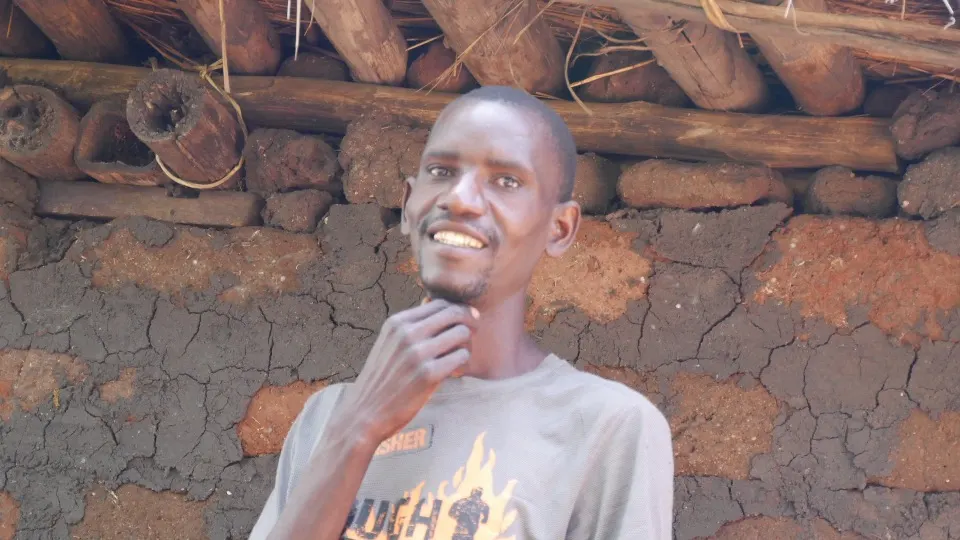
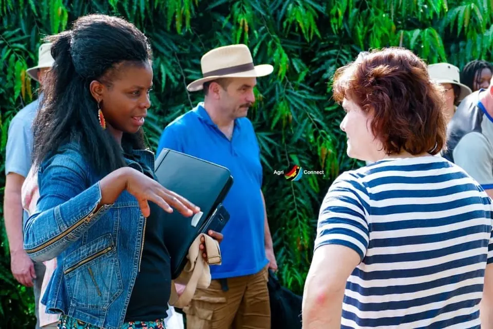
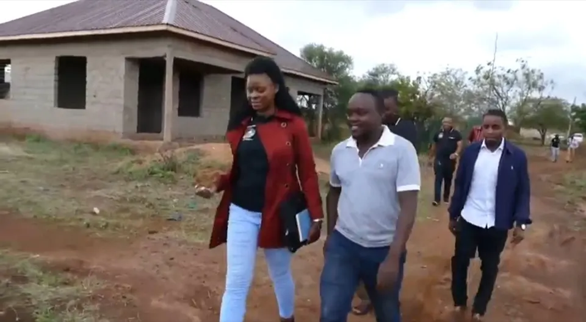

Agri-Connect Tanzania
Project mode
“AGNES’S MODEL FOR COMMUNITY DEVELOPMENT”
The model's strategic Approach:
REACH THOSE WHO ARE NOT YET REACHED
In our community there are many people in different groups particularly youth, who are not yet reached. Could be because they live in remote areas; could be they are not in a social economic status of being known and be seen quickly to be reached; could be they have no voice to speak and be heard quickly as others; Could be they are left aside after falling into worldly unhealth addictions and look hopeless, giving up; or could just be for any other reasons or no reason they are just not yet reached. Agri-Connect Tanzania aims to reach those both individually and in groups.
START WITH THOSE WHO CAN BE PILLARS FOR OTHERS IN THE FAMILIES AND COMMUNITY AT LARGE.
This means the support priority starts with those who are committed for the support and willing also to support others. This will help to keep the circle going until we cover the whole community. The reason is: There are people when they succeed, they become very selfish and live the life Agnes calls “don’t touch me”
Agri-Connect Tanzania aims to; “Support one person whom we know behind him/her ten (10) more people are automatically supported”. And this is one of our approaches under Agnes’s Model for Community development.
Reflecting this model, this is Agnes’s Observation:
Let us always stand for the weak, vulnerable and those less advantaged people, to plan and see how we can all be helped, to be strong again; not only spiritually, mentally and physically, but also economically. The truth is all things are possible.
Many saints of today were strangers of yesterday.
A poor person of today can be a rich person of tomorrow.
Knowing this pure truth, there is no doubt weak and disadvantaged groups of people in our communities today, can be the strongest people tomorow. we desire for a community with strong people in all areas.
Let us all do something in helping one another. Together is power, separation is weakness. We can stand together in changing our lives and the lives of millions. Let us flash away any sort of selfishness spirit, which is known to be not only barrier but also setback reason for many development issues around us.
CALL OF ACTION:
You are always invited to join us in making this possible by supporting us with your ideas, money and any related material that can support youth environment in one way to another.

Gib hier deine Überschrift ein
Using the same method of Barter trade, we believe young people can exchange knowledge on the same way goods can be exchanged.
“Users can trade the skills that they have, in exchange for the skills that they need. Exchanges can be made with services, money, or a combination of both. Users can present their skills on a personalized page, search for other desired services or users, create and negotiate requests, and generate safe, recorded exchanges”

BARTER TRADE SYSTEM model
The project will also adopt BARTER TRADE SYSTEM Model, but only basing on Knowledge Exchange.
With the aim of facilitating the mission of Mindset changing among Youth, from negative thinking like giving up, life unhealth addiction such as alcoholism and all alike; to more positive thinking towards their development.
Using this model, the idea is to base on knowledge exchange among youth themselves, and it is done in three categories at least:
- Where Youth are. - This is the reason of giving them guidance of organizing themselves to what we call Community based organization which are now just groups. They are expected to share among themselves their own economical experiences on what they have tried to do in the past, what they are doing now and all they wish to do in the future.
- Knowledge exchange by travelling to different environments; outside their villages – This is done by creating opportunities for Youth groups to visit and learn from other groups located outside their communities, within the country.
- By being trained in their locations by different national and international trainers - This approach is applied depending on the needs and the topics.
Our Observation when reflecting the approaches applied in this model:
Everyone is potential and has something not only to share but also something others can learn from. What is needed is the better way on how we can all come together and learn from each other’s experience. Agri-Connect Tanzania provides guidance where practical knowledge can be available and shared among youth groups. Agnes Link once said, “Nobody has so much enough to give, equally to nobody has completely nothing to give”
FLEXIBILITY AS A PRINCIPAL METHOD TO BE APPLIED
Flexibilty is the principal chosen to make difference. We are all different and what might be a challenge to one might not be the same to the other. Knowing this Agri-Connect Tanzania has chosen to use flexiblity method in making different. In reaching young people accordingly and get their lives changed accordingly.
As a sociologist, sociologically human being are unpredictable. so in order to real support young people to support themselves flexibility that will handle the situation of young person individually or in a group accordingl helps. We may say this is the strategy and it works but we will always leave a room for flexibility that allowa i case or a situation to be handled accordingly.
We are globalization era where flexiblity, mobility and open minded has become very important in our lives if we real need success.

When firstly ACT steps to the stage of supporting Youth with Micro-credit
 Opens YouTube in a new tab
Opens YouTube in a new tab"NO BODY HAS SO MUCH TO GIVE, EQUALLY TO NOBODY HAS COMPLETELY NOTHING TO GIVE, WE ALL HAVE SOMETHING TO GIVE".\ In my life experience I have lent we are all potential. We all have something to share expecially in terms of knowledge. This brought me to adopt Barter system way of knowledge sharing. Also there people who are born unselfish and if we know them and support them we will have supported 10 more others. Support ten people at same time by supporing one who is equiped to know the potentiality of helping each other.\ \ "TOGETHERNESS IS POWER, SEPARATION IS WEAKNESS"\ TOGETHER WE CAN\